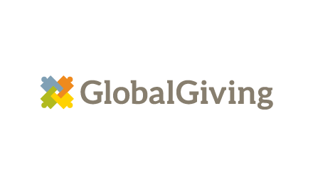

<!DOCTYPE html>
<html>
<head>
    <meta name="viewport" content="width=device-width, initial-scale=1.0">
</head>
<!--this is inis final project-->
<title>Ini Adedeji</title>
<link rel=stylesheet type="text/css" href="./day10style.css">
</html>
<body>

<section class="header">
  

  <h1 style="text-align: center;">Planet trees</h1>
</section>
<!--this is the first header of inis project-->
<section class="row">
<!--this is the first section of the project-->
<section style="float: left;" class="col-3">
  <ul>
    <li><a href="./Day10index.html">home</li>
    <li><a href="./day10table.html">Donation stats</li>
    <li><a href="./day10form.html">Donate</li>
    <li><a href="./day10wbpage.html">Webpage plan</li>
      <li><a href="./day10about.html">About us</li>
  </ul>
</section>
<!--this is the second section of Ini's-->
<section style="float: right;" class="col-9">
  <br>
  <br>
  <br>
  <p>planet trees is a placer to donate for the cause of helping grow trees to combat global warming</p>
  <p>the diffrent pages you can visit under planet trees are to your left.</p>
  <h2>other websites you can donate to forv the cause of combating global warming are listed below: <h2>
    <br>
    <br>
    <br>
    <li><a href="https://www.climateproof.ca/">climate proof</li>
      <p>We are a broad coalition of insurance industry representatives, municipal governments, Indigenous organizations, environmental NGOs and research organizations.</p>
      

      <br>
      <br>
      <br>
      <li><a href="https://www.canadahelps.org/en/donate-to-environmental-charities-giving-back-to-the-planet/">canada help </li>
        <p>our goal To inform, inspire, and connect donors and charities, and to democratize access to effective technology and education in the charitable sector.</p>
        

        <br>
        <br>
        <br>
        <li><a href="https://www.edf.org/fight-global-warming">Eviromental defence fund</li> 
          <p>For more than 50 years we’ve been pioneers, using science and different perspectives to make the environment safer and healthier for us all.</p> 
          
 
          <br>
          <br>
          <br>
          <li><a href="https://www.globalgiving.org/climate-action-fund/">global giving</li>
            <p>GlobalGiving is a nonprofit that supports other nonprofits by connecting them to donors and companies. Since 2002, we've helped trusted, community-led organizations from Afghanistan to Zimbabwe (and hundreds of places in between) access the tools, training, and support they need to make our world a better place.</p>  
            


</section>

</section>

</body>
</html>

